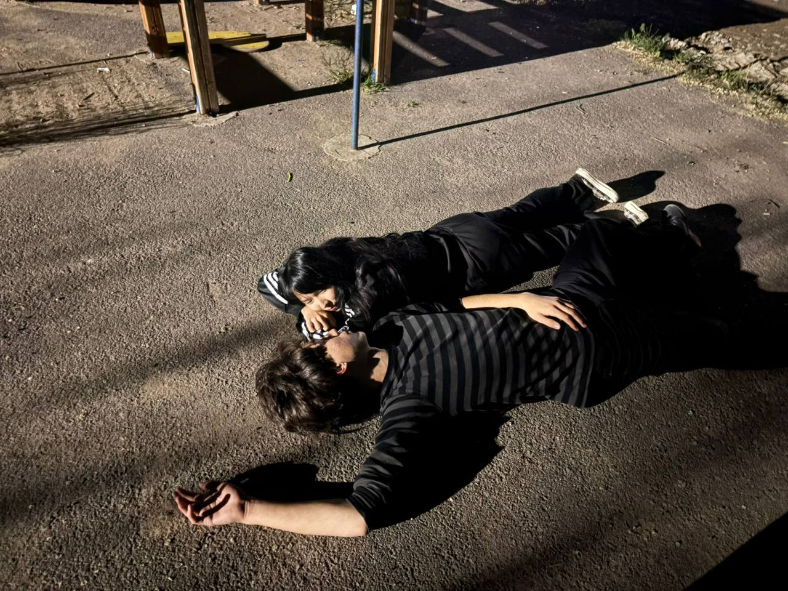
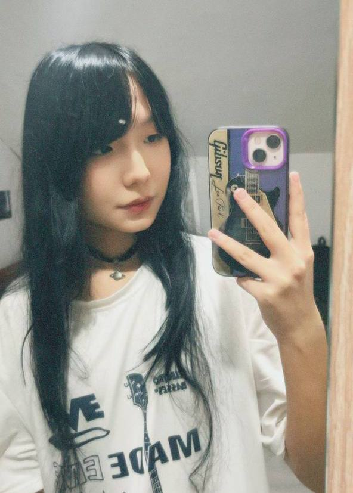
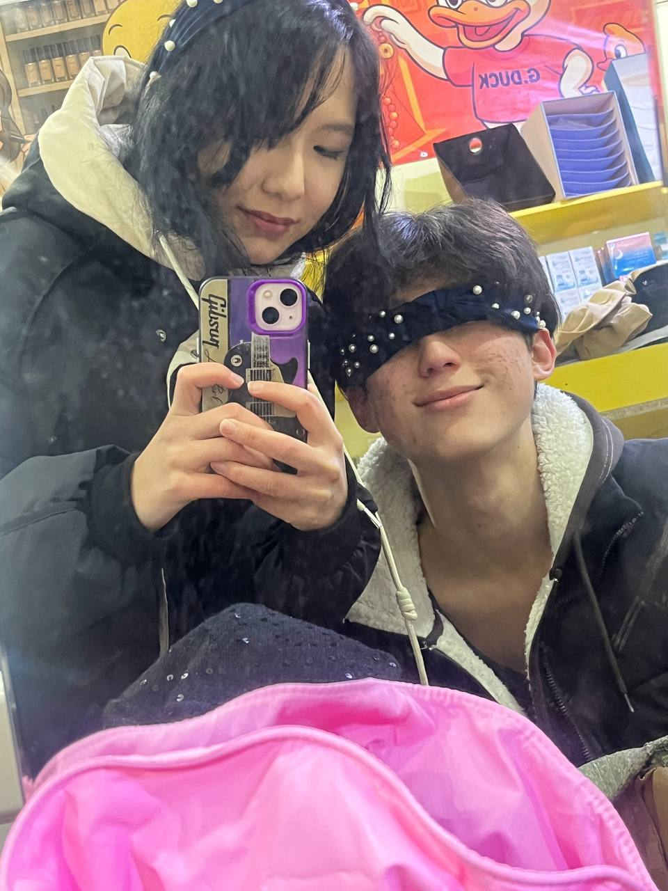
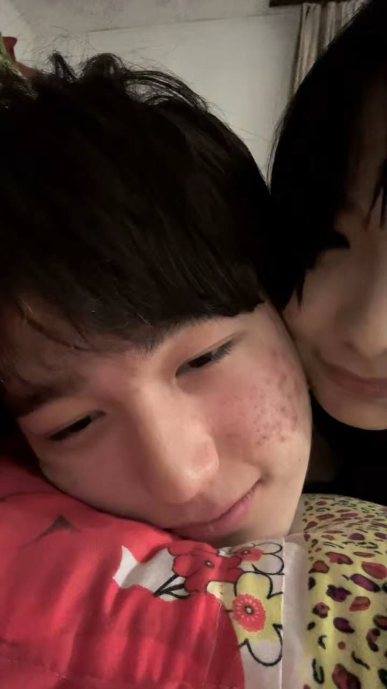

Куаныш, сразу хочу сказать, что я хочу быть честным и буду писать всё, о чём думал и что чувствовал. Если в моих словах будут слова, которые тебя заденут, прости, пожалуйста. Я не пишу это в порыве гнева или в обиде, а на спокойном тоне и хочу рассказать всё с моей стороны.
До всего этого: после довольно весёлого 7 класса я хотел обзавестись друзьями не только в школе, но и по посёлку, и я начал каждый день посещать ту площадку. Там я встретил тебя. Ты мне тогда сразу же понравилась и зацепила своей внешностью. Я никогда в своей жизни не видел таких красивых девушек и очень хотел познакомиться с тобой, но, не имея никакого опыта в общении с девушками, я просто зассал. Но удача была на моей стороне, и ты сама начала разговор со мной и обменялась со мной контактами.
Мне очень понравилось с тобой общаться, и я думал, что нашёл себе лучшую подругу. Но вот когда мы с тобой устроили тот пикник и лежали в обнимку, я почувствовал то, что никогда раньше не чувствовал. Моё сердце билось с такой скоростью, что оно чуть не вырвалось. Я бы всё отдал, чтобы снова испытать эти чувства, но понимаю, что больше такого не будет. Это было самым лучшим моим воспоминанием, связанным с тобой.
В тот момент я влюбился, но не стал лезть, так как ты тогда встречалась с каким-то Раимом. Всё лето я думал лишь о тебе и в начале августа принял решение прекратить с тобой общение, так как я сильно устал от твоих жалоб на жизнь. Хотя нет, это скорее я испугался и не мог нормально поддерживать свой объект симпатии и любви.
Хоть ты и младше меня на полгода, но чувство такое, будто ты уже давно повзрослела, а я так и остался 13-летним пацаном. Весь 8 класс я особо не думал о тебе и отпустил тебя за пару недель, но летом 2023 года, когда я выходил с тренировки по боксу, я встретил тебя на той же самой площадке, и сердце у меня опять сжалось.
Ты опять обменялась со мной контактами, извинилась за прошлое лето, и мы начали общаться. Ты так и продолжала давать мне капельки внимания, а я и дальше скрывал свои чувства, потому что у тебя был парень.
Помню, как ты проводила меня до дома, и я тогда соврал тебе, где я живу, чтобы в будущем, когда я исчезну из твоей жизни, ты не могла найти меня, потому что я сильно боялся отношений и всегда хотел провести всю жизнь с одной той самой.
Помню нашу первую гулянку ночью, когда мы пошли на площадку 10 школы. Я прекрасно помню, как мы играли в су-ли-фа на желание, ведь я это специально предложил, потому что знал, что я тебе нравлюсь, и надеялся, что при выигрыше ты будешь лезть ко мне. И мои надежды сбылись.
Всё прошло так, как я и хотел, и когда ты сидела у меня на коленях и целовала мне шею, я будто бы снова влюбился в ту же самую дуру с площадки. Но одновременно я осуждал тебя, ведь ты встречалась с парнем, но в это время общалась и чувствовала чувства ко мне.
Из-за этого случая я думал, что никогда не буду встречаться с тобой, потому что ты шлюха, но это было неправильно. Я тогда сбежал утром под предлогом, что меня позвали старшаки, но ты сразу поняла, что это враньё и что я хочу уйти.
Я помню, как ты отказывалась давать мне мою же одежду в надежде, что я оставлю её тебе, но я отобрал кофту, так как хотел полностью разорвать все связи с тобой. Я пришёл домой и сжёг эту кофту, а позже написал текст о том, как я ненавижу тебя и хочу перестать общаться с тобой, хотя я никогда не хотел этого и любил тебя.
Вплоть до 2024 года я о тебе никому не рассказывал и всё хранил в себе, но в какой-то момент сорвался и начал жаловаться своему близкому другу Макару. Я говорил ему, что очень люблю тебя и хочу быть с тобой всю жизнь, но считал тебя легкодоступной девушкой, которая точно будет изменять.
Макар сказал мне те вещи, о которых я никогда даже не думал. Цитирую:
«Чувак, она всегда тянулась к тебе сама первой и сама же хочет быть с тобой. Если ты так и всю жизнь будешь ожидать идеальную, ты никогда не почувствуешь любовь и останешься голодным в мире, полном любви».
После этих слов я решился действовать, но всё ещё боялся писать тебе прямо.



